Agnes Projects


Musica
i progetti musicali finiti e in progress

Arts
disegni e arti figurative

Crafts
arti tessili varie
Un sito per raccogliere e tenere traccia dei progetti in cui mi imbarco, in tutti i media in cui ho competenza. Questo stesso è un progetto che nasce per il corso di informatica di un corso universitario, ma rimarrà un mio compagno che verrà progressivamente aggiornato con tutte le idee che mi verranno.